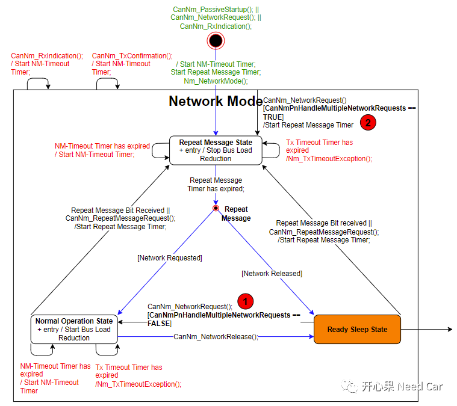
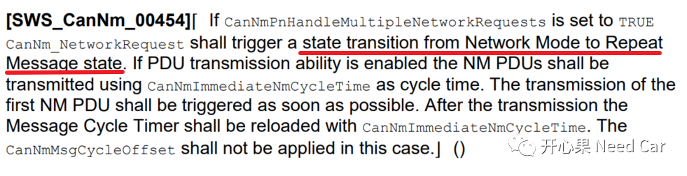
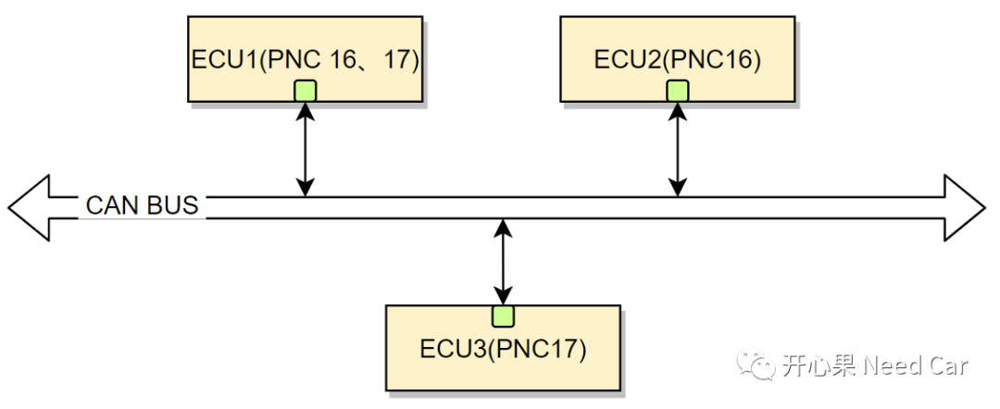
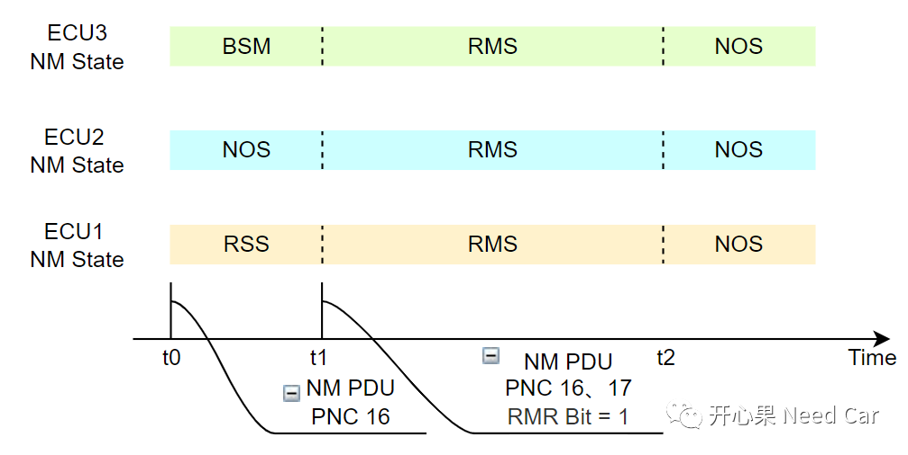
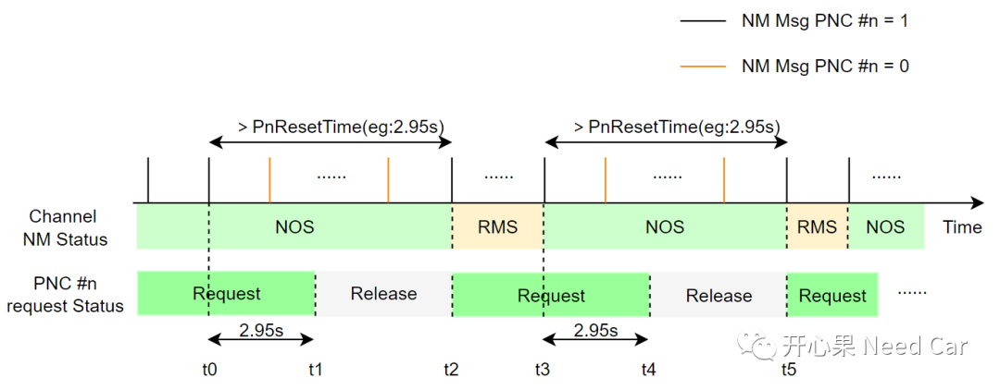
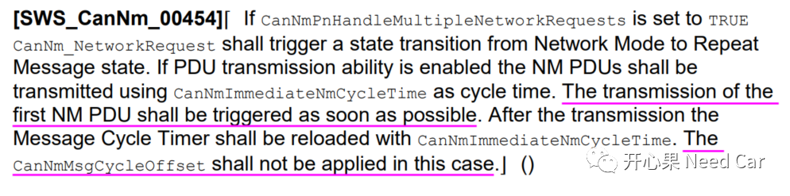
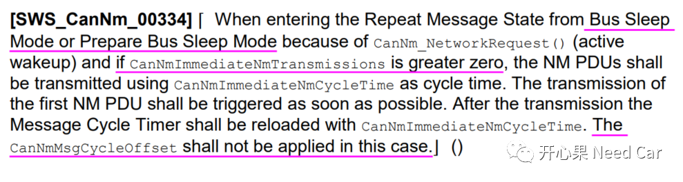

先回答标题问题：“对我自己而言，没有”。有时我自己会有这样的感受，Autosar的某些规范即使看了很多遍，工程上也碰到了些问题，但是每次再去读，发现：依然有些东西是不清晰的。本文就CanNM的网络状态机，再和大家抠几个细节，希望对你有用！
1、CanNmPnHandleMultipleNetworkRequests 作用
如果项目中，网络管理不用PN（Partial Network）功能，可能不太会关注CanNmPnHandleMultipleNetworkRequests。先看一下Autosar规范给出的解释：Specifies if CanNm performs an additional transition from Network Mode to Repeat Message State (true) or not (false).
也就是说，该参数使能与否决定着节点网络状态是否可以切换到RMS（Repeat Message State）。从哪种状态切换到RMS状态呢？

由上图可以看出，使用CanNmPnHandleMultipleNetworkRequests参数时，均与CanNm_NetworkRequest()接口的调用相关，主要有两个地方会判断该参数的使能情况。
位置 1
如果节点的网络状态在RSS(Ready Sleep State)，调用CanNm_NetworkRequest()接口请求网络时，能否进入NOS(Normal Operation State)取决于CanNmPnHandleMultipleNetworkRequests的使能情况：
CanNmPnHandleMultipleNetworkRequests = FALSE，节点网络状态由RSS切换到NOS；
CanNmPnHandleMultipleNetworkRequests = TRUE，节点网络状态由RSS切换到RMS。
为什么CanNmPnHandleMultipleNetworkRequests = TRUE，网络状态需要切换到RMS状态呢？先看Autosar规范给的解释：

CanNmPnHandleMultipleNetworkRequests 的使能，我们需要先意识到一个前提：PN的使能，即：CanNmPnEnabled == true。使用PN功能，意味着每个节点会关联对应的PNC，只有接收到的PNC和节点相关，节点网络才能唤醒。如下图，假设某CAN BUS上有ECU1、ECU2、ECU3三个节点，ECU1关联PNC 16和PNC17，ECU2关联PNC 16，ECU3关联PNC 17。
t0时刻，只有ECU1和ECU2在通信，即：NM Msg只包含PNC16，且ECU1进入RSS状态，ECU2在NOS状态，ECU3未有唤醒（处于BSM）；
t1时刻，由于ECU1上层主动请求网络，ECU1 需要唤醒ECU3参与通信，主动调用CanNm_NetworkRequest()接口请求网络(比如：对应的PNC17的VFC置位)，同时发送的NM Msg中包含PNC 17。ECU3收到包含PNC17的NM Msg以后，网络状态由BSM进入RMS状态，为了保证三个节点在同一网络状态，因此，ECU1需要从RSS状态切换到RMS状态，同时，ECU1发送的NM Msg中，Repeat Message Request Bit = 1，将ECU2由NOS状态也拉回RMS状态，以此确保三个节点在相同的网络状态。不理解RMR Bit作用，可以参考前文勘误篇(一)：Autosar网络管理：RepeatMessageRequestBit作用，你清楚吗？；t2时刻，Repeat Message Timer超时，三者脱离RMS状态，ECU1、ECU2、ECU3进入NOS状态。
此处说明，只要在NM（Network Mode）模式下调用CanNm_NetworkRequest()接口，且CanNmPnHandleMultipleNetworkRequests ==TRUE，网络状态需要切换到RMS状态，且重启Repeat Message Timer。分析同上，此处不再赘述。举例说明PNC请求与Channel NM Status关系：
t0时刻，PNC #n保持请求（PNC #n = 1）,假设PNC #n映射的Channel网络状态为NOS；t1时刻，PnResetTime（2.95s）内收到PNC #n = 0（或者没有收到），PNC #n释放；
t2时刻，PNC #n再次请求，PNC #n映射的Channel网络状态由NOS进入RMS；
t3时刻，PNC #n保持请求，Channel由RMS进入NOS状态；t4时刻，2.95s时间内没有PNC #n请求，PNC #n释放，Channel保持NOS状态；从网络状态机可以看出，CanNm_PassiveStartup()、CanNm_RxIndication()、CanNm_NetworkRequest()接口的调用均可将节点网络状态切换到RMS。
CanNm_NetworkRequest()：调用此接口，说明节点需要主动唤醒网络，如果此节点由BSM、PBSM模式进入RMS状态，第一帧报文需要是网络管理报文，快速将网段内其他节点唤醒；CanNm_PassiveStartup()、CanNm_RxIndication()：调用这两个接口，个人理解：第一帧报文没有必要是网络管理报文，因为总线上已经有网络管理报文在发送，说明有主动网络节点发送了网络管理报文，承担着快速唤醒网络的“重任”，所以接收节点无需保证第一帧报文是网络管理报文，接收节点需要做的是把应用报文快速发出，保证功能的快速使能。3、CanNmMsgCycleOffset的使用场景
网络唤醒时，各主动网络节点均发送各自的NM Msg，会增加总线负载，为了降低网络唤醒时的总线负载，会为每个主动网络节点设置一个Offset值，比如：CanNmMsgCycleOffset。CanNmMsgCycleOffset的使能需要注意：使能快发模式时，CanNmMsgCycleOffset不适用，需要注意的其他条件，Autosar也给出了其他解释，如下所示：CASE 1：

CASE 2：

注意：CanNmMsgCycleOffset是发出第一帧网络管理报文时的偏移值，即满足NM Msg发送时，第一次发送NM Msg时的偏移。点击下方关注，一起聊聊Autosar/嵌入式，如果需要，联系作者进群，给你更专业的解答